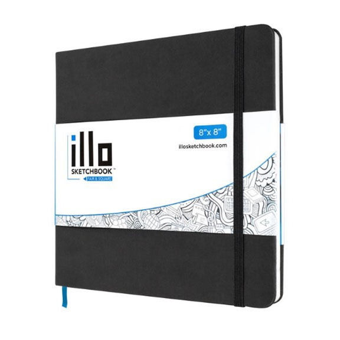

The Only Sketchbook You’ll Ever Need
A review of the “fair and square” illo sketchbook.
By Amber Safeer
If you are an artist like me, chances are you are consistently in the market for some sort of drawing pad or sketchbook. Maybe you’re a die-hard believer in Moleskine sketchbooks, or perhaps you’re the type to just grab a piece of lined notebook paper and go to town (personally, I have been both). However, none can compare to the beauty that is the illo premium square sketchbook. Out of all the sketchbooks I have encountered throughout my artist journey, this one has had a lasting impact on the way I work view the process of sketching altogether.
Product picture of the illo sketchbook 8"x8", courtesy of illosketchbook.com
Notable Features/Specifications
| Type | Size | Price |
|---|---|---|
| 4.5”x4.5” | $12.75 | |
| Standard | 8”x8” | $16.75 |
| XL | 10”x10” | $24.99 |
All variations include:
- Durable, grey cover
- Elastic enclosure
- Ribbon marker
- Back page pocket
- 112 pages
- 122lb - 180 gsm
The Extras
While I personally had the standard size sketchbook, the various sizes that illo offers provides artists with options when it comes to the kind of art they want to make – do they need something small and portable, or something larger for more finalized pieces? Moreover, the ribbon marker ensures that you never lose your place, while the elastic enclosure guarantees that your sketchbook stays shut, even if it is bursting at the seams with creativity. Another little surprise – the back page pocket – also allows artists to keep their loose artworks in a safe space.
The Paper
My personal favorite feature, however, must be the paper itself. With 112 pages of 122lb paper, this sketchbook is thick and can handle anything from pencils, to markers, to paints. If you’re unsure of how to think about the weight of the paper, picture it this way: if you had a stack of 500 sheets of paper in its standard sheet size (presumably 8”x8”), it would weigh 122 pounds. For reference, your typical printer paper weighs in at about a 20lb paperweight, while a thicker watercolor paper ranges around 140lb. Essentially, the greater the paperweight, the thicker the paper, and the less likely it will buckle to moisture, meaning that the illo sketchbook paper is great for multimedia
Additionally, illo’s square paper shape is quite unusual in the realm of sketchbooks, however the ratio makes the pages an ideal candidate for Instagram pictures. The pages are also “perfect bound,” meaning that the paper and cover are glued together at the spine. While some people may prefer the way you can fold spiral bound sketchbooks, I find that perfect bounds allow you to create the most seamless full-page spreads, and the illo sketchbook lies flat to ensure that the entire layout can be photographed appropriately.
The Cover
Aside from the inside of the book, I adore the front and back cover of the illo sketchbook. Unlike some other brands such as Strathmore, the illo sketchbook features a removable paper logo and a dark grey, blank cover – a perfect canvas for an artist. With its durability, the cover can easily be painted on or decorated with stickers to add a bit of personality to what appears to be a rather dull book.
Are there any Cons?
Despite my love for this sketchbook, it is only fair that I be completely transparent about its capabilities and shortcomings. Throughout my time using this sketchbook, the only “poor” thing worth noting is how the paper handles alcohol-based markers. While it doesn’t buckle or leak onto the next pages (for the most part), the ink does bleed through to the back of the page you are working on. For some, this is a major flaw, as marker-based artists want to use the sketchbook to the fullest, not only half of the pages.
However, I argue that this shouldn’t be a glaring issue, because the book is used for sketching, not necessarily final designs. If an artist really wanted to have multiple finalized artworks using markers, then they should invest in a marker pad, not a sketchbook. Moreover, I think the bleeding of the ink can create fun shapes and patterns that spark even more creativity, only adding to the greatness of the sketchbook. If the transfer of marker does bother you that much though, it can be a good incentive to utilize sticky notes, washi tape, stickers, and other materials to cover the marker while filling the sketchbook in a unique way.
Takeaways
While some may classify illo sketchbooks as overhyped or overrated, I believe that the illo sketchbook gets exactly the recognition it deserves. From its fair price to stellar quality, it is impressive how illo beats out its older competitors despite being relatively new (around 2017) to the paper game. If I had to rate it, I would give the illo sketchbooks a 9/10. Yes, I have almost nothing but praise for the product, however I would like to see some more variety in the product in later years, perhaps in the form of toned tan, charcoal, or Bristol paper. Additionally, while I see a lot of the features of the sketchbook as pros, in the end it is very subjective to what the individual artist wants. For example, the perfect binding can be infuriating to those who wish to tear out pages in their sketchbook, and the paper may be too thick for just simple daily pencil sketches. Overall, though, I believe it is absolutely worth the investment. If you’re anything like me, once you try out illo, you’ll never look back.
The Reality of Redbubble: An Artist's Perspective
Is it really working for the creators?
By Amber Safeer
Let’s set the scene: It’s the year 2020, and you are a bored teenager during lockdown with a desire to fill your vacant laptop with cute relatable stickers to bring you a twinge of joy during the dark times. You could search on Amazon for stickers, sure, but you are looking for that uber-niche “Je Suis Calme!” sticker from Taylor Swift’s hit song, “ME!” Naturally, you go to the single website that handles all your fangirl needs: Redbubble.
Okay, so maybe that scenario is a little specific. Nevertheless, Redbubble has been a popular consumer destination for artists and fans alike for many years. I personally decided that I wanted to start selling on Redbubble around 2021. I had time to kill, a drawing tablet, and a sketching program. So, I have been on both the receiving and delivering end of Redbubble; both a customer and an artist. These experiences have given me a unique perspective on the platform, one that I think is important for everyone to hear if they’ve ever considered using the website.
Discovering Redbubble as a Consumer
From an outsiders’ perspective, Redbubble is a really promising e-commerce platform, as it is similar to sites such as Etsy, except one company handles all of the manufacturing and delivering (as opposed to individual sellers). The user interface is very simple to navigate and provides easy ways to search your favorite content or explore new ideas/creators. The prices are fair, the designs are beautiful, and you get to be a part of something that directly benefits artists – what could be better? However, on occasion, you will find repeated designs as you scroll through the feed. For instance, when I look up “frog cowboy stickers,” I notice that some of the graphics are eerily similar if not exactly alike. Surely this is not demonstrating a fatal flaw in the mechanics of Redbubble and is instead just an odd coincidence that happens from time to time.
Becoming a Redbubbler
When I first started out as an artist on Redbubble, I had no idea what to expect. Thankfully for me, making a creator account on Redbubble and listing my designs were extremely easy. The only issues I ran into were trying to figure out image dimensions/resolutions, but luckily Redbubble provides countless articles for sellers to learn the basics of their platform. Luckily, because I have great friends, a bunch of them bought stickers from me (and I decided to get myself a shirt). The quality was mediocre, but it was surreal to have something I created printed on a physical t-shirt. I was also ecstatic that making my profile and selling my designs was completely free, though each sale wasn’t very lucrative because Redbubble needed money to take care of manufacturing, shipping, etc. Nevertheless, it was exactly what I needed: a place to easily get my art out there without having to handle an entire small business on my shoulders.
The Waiting Game
Aside from a few of my friends purchasing my designs, there was low traffic on my account, no matter how much I promoted it on social media. However, I really could not expect much with my measly four designs: it was like throwing a needle into a haystack. As a result, I also did not end up getting paid (at least, not for a while) because I did not meet the payment threshold of $20.00. Personally, I never understood why the payment threshold existed in the first place, but at the very least Redbubble does eventually pay their creators.
Controversy Appears
While my experience with Redbubble may differ from yours, there is one thing that creatives can agree on: Redbubble is detrimental to independent artists. How? Well, let’s take a step back to those “duplicated” designs we were talking about earlier. In the following image, we can see that there appears to be the same frog graphic, each with a different colored hat. Look closer, and it is evident that these are from two entirely separate creators. Now, that means either one is ripping off the other, or they are both illegally using someone else’s design to turn a profit.
Yikes.
Redbubble has articles on “what to do if someone steals your art,” and claims that they work to prevent art fraud, but the truth is, theft is rampant on the site. Because anyone and everyone can sell, non-artists find it fair to sell other people’s work without consent, or even worse, utilize AI generated images to sell. At this point, it is near impossible to tell who can be trusted. Sure, some accounts seem to be verified, but there is no transparency on Redbubble’s end as to what this actually means, and their reputation only continues to worsen as the years go on.
Tiers for Fears
Remember how I mentioned that selling designs is completely free? Well, that is only partially true. Starting in May of last year, Redbubble introduced “artist tiers,” where they classify your account as either Standard, Premium, or Pro. Each tier brings their own benefits, however accounts at the Standard Tier are forced to pay an account on top of what they sell. What’s worse, you cannot choose to be in a certain tier – you are placed there based on certain “classifications” that are vague and truly help no one. Redbubble only continues to push out updates that deter the very people the platform was made for: independent artists.
Conclusions
While Redbubble appears to be an innocent platform on the surface, there is much more to it than meets the eye. If you are someone who cares at all about small businesses or supporting independent artists, then please, steer clear of Redbubble. Their mission long ago may have had good intentions, but it is evident that as their company slowly falls victim to bankruptcy, they will do anything to keep afloat. If you’re really looking for cute, unique designs, then shop small. It may cost more, but at least you know you’re not feeding into the soul-sucking corporate machine.